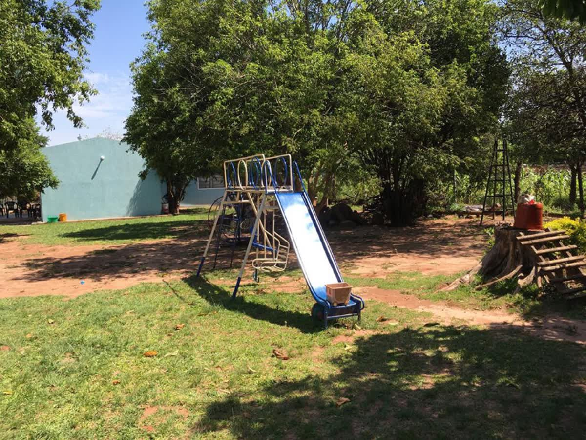

Querido amigo, querida amiga:
Me llamo Zunilda. En 2003 abrimos las puertas de esta casa en Caaguazú porque veíamos, todos los días, a niños que sufrían el abandono, el maltrato y la violencia dentro de sus propias familias.
Los chicos llegan acá por orden de un juez. Tienen entre 0 y 8 años. Muchos llegan desnutridos, y casi todos con miedo.
Lo primero que hacemos es que un médico los revise. Después, lo que cualquier niño merece: un plato caliente, una cama propia, la escuela todos los días y alguien que los abrace cuando tienen miedo a la noche.

Hoy viven en el hogar 12 niños y niñas. Sostener la casa, la comida, la escuela, la salud y a las cuidadoras cuesta unos Gs 30 millones por mes. Lo cubrimos como podemos: con rifas, ferias, la huerta, los productos de limpieza que hacemos y vendemos, y algunos padrinos generosos.
Pero no alcanza. Por eso te escribo.
No te pido mucho. Con Gs 60.000 por mes, Gs 2.000 por día, ya sos parte de esta familia. Y si llegamos a 500 padrinos así, el hogar queda de pie todos los meses.
Te prometo algo: cada mes te voy a contar, por WhatsApp, cómo están los chicos y en qué usamos tu aporte.
Gracias por leer hasta acá. Ya con eso, nos estás cuidando.
P. D.: Si preferís ayudar una sola vez, también nos hace muchísima falta. Elegí "Una sola vez" en el formulario.